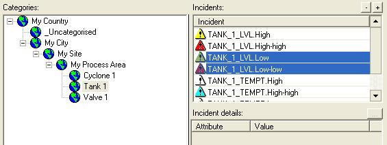

Quick Start to Configure and Record Incidents (Alarms/Events)
This explains the recommended method of implementing the AlarmManagement
agent to configure and record your activethe monitored condition of this incident (alarm/event) is still in effect and has not yet returned to its normal operating state.
incidents so that you can improve your alarming configuration.
Ensure that your Adroit
license is licensed to enable your AlarmManagement agent to
function.
WITHOUT this license your AlarmManagement agent stops
populating the database with incidents after 1 hour.
Create the required OLE
DB compatible database, we STRONGLY RECOMMEND that you use a MS SQL database
for your alarm management.
Note: You can
NO LONGER connect to a MS ACCESS database for your AlarmManagement database,
due to known performance issues.
If you do not have SQL installed then install
MS SQL EXPRESS.
If possible, create the
required incidentssignified by AgentName.AlarmType, which indicate that this agent has gone into the condition or state specified by this alarm type. Each incident can either be an alarm (requiring action) or an event (not requiring action).,
although these can be added to the AlarmManagement agent as needed.
IMPORTANT:
DO NOT use or configure the delays and/or conditions provided by the AlarmManagement
agent (or its database), since this functionality will be removed from
future versions of Alarm Management.
To log and/or configure your incidents:
Add and/or locate the required AlarmManagement agent.
If necessary, add an agent of the required type, as follows:
In the SmartUI Designer:
Select the required SmartUI Server in the Enterprise Manager, as follows:
Open the Enterprise
Manager.
Navigate to Servers > [Server Name].
Tip: The connection
name is prefixed by the SmartUI Server computer name.
If necessary, expand the Datasources category.
If necessary, expand the required Adroit datasource or its icon .
If necessary, expand the AgentGroup tree.
Right click the required agent type , which are listed alphabetically, and select Create Tag.
Agent names cannot be the
same as the names used for Agent Types or for Agent Groups.
Agent names cannot use
the following characters:
Space
Percent
%
Comma
,
Period
.
back slash
\
Dollar
$
If necessary, provide an optional Description that describes the purpose or describes the value of this tag (agent) for ease of reference.
Click the Finish button.
If necessary, locate the required agent, as follows:
In the SmartUI Designer:
Select the required SmartUI Server in the Enterprise Manager, as follows:
Open the Enterprise
Manager.
Navigate to Servers > [Server Name].
Tip: The connection
name is prefixed by the SmartUI Server computer name.
If necessary, expand the Datasources category.
If necessary, expand the required Adroit datasource or its icon .
If necessary, expand the AgentGroup tree.
If necessary, expand the required agent type , which are listed alphabetically.
Locate the required agent , which is also listed alphabetically beneath their applicable agent
type.
In the Enterprise Manager window: right click this agent and select Configure.
When the Edit AlarmManagement agent dialog is displayed:
Ensure that the Start
Alarm Management Agent checkbox is checked.
Specify the location of the SQL database in the Connection field.
Note: If you need to configure the Alarm Management agent from remote computers, it is safer to use SQL authentication (Use a specific user name and password) when creating this connection and NOT Windows authentication (Use Windows NT Integrated Security) unless you are sure that the logged on users at the remote computers have the necessary access rights to this SQL database. More details:
If the SQL connection string configured in the Alarm Management agent has been configured using Windows authentication and you then try and connect from a remote UI to configure, it will more than likely not work (in other words the configured incidents will not appear).
This would happen if the Windows User on this remote computer has not been given access rights to the SQL database.
Click the ... browse button to
the right of this field and use the Data Link Properties dialog
to create the required connection string to your SQL Server database.
The Data Link Properties dialog specifies the location and the
security credentials required to connect to this database.
Double-click the Microsoft
OLE DB Provider for SQL Server item in the Provider tab of
the Data Link Properties dialog.
Important: If the computer, on which SQL Server was installed, was renamed, then SQL Server may need to be re-installed.
If the computer was renamed after installing SQL Server, then SQL Server must be re-installed, to function correctly.
Run the following check:
Execute the following T-SQL (Transact-SQL) script in SQL Server Management Studio: SELECT @@SERVERNAME
If the resulting server name is different to the actual name of the computer, then the name of the computer has been changed after SQL Server was installed, so you need to reinstall SQL Server.
Note: If you need to configure or view this database and its data from remote
computers, then you should use a UNCUniversal Naming Convention (UNC) is used to specify the location of servers, printers, files and other shared resources on a local area network (LAN). UNC names begin with \\ (two backslashes) and take the form: \\Computer_name\Share_name path
and not a local file paththis path, as opposed to a UNC path, can ONLY be accessed from the computer that it refers to, this path adopts the following general format: <driveletter>:\directories\filename. to specify the location of this database.
Type in the
computer name of the SQL Server that you want to connect to, in the Select
or enter a server name field.
Tip: This is the fastest method if you know
the name of the SQL Server.
Alternatively, click the drop-arrow button to
the right of the Select or enter a server name box and select
the name of the required SQL Server from the list.
Specify the required security
credentials to connect to the selected SQL Server:
Important:
If you need to connect to
a remote SQL Server database and want to run the Agent Server service using the
Local System account, then use
SQL Server Authentication.
If you need to connect to a remote SQL Server database and want to Use
Windows NT Integrated security, then ensure that the user profile
that the Agent Server service uses to log onto the computer has the necessary
rights to browse the network and connect to the remote database. This
should NOT be the default Local System account.
Use Windows NT Integrated security: this
option uses the username and password of the currently signed in Windows
user.
Tip: We recommend
that you configure your SQL Servers to use this option to avoid requiring
additional database security.
SQL Server Authentication: this option
uses the User name and Password configured within the SQL
Server you are attempting to connect to.
Note: In this case, it is recommended to select
the Allow saving password checkbox.
Select the name of the
required database from the Select the database on the server list
box.
Click the Test Connection
button to ensure that you are able to connect to this database using these
details. Only proceed once 'Test connection succeeded' is displayed.
The Advanced tab of this dialog
allows you to specify access permissions for this connection string.
If
you are unsure about these settings, then never set these permissions to Read,
otherwise this connection string will fail.
These security credentials are database
specific and should not be confused with application security.
if necessary, you can edit this string directly, once it has been created.
Click the Update
button.
Categorizing your incidents
By default, all the incidentssignified by AgentName.AlarmType, which indicate that this agent has gone into the condition or state specified by this alarm type. Each incident can either be an alarm (requiring action) or an event (not requiring action).
assigned to the alarm routes that use this AlarmManagement agent are added
to the _Uncategorised category
of its Categories tree.
Typically you will create and use categories for your incidents for one or both of the following reasons:
The more incidents in the
_Uncategorised category, the harder
it becomes to differentiate between these incidents.
For this reason, you can create other categories to distinguish
between the following:
different areas
or sections of your process, such as crushing, flocculation etc.
different equipment
within each of these areas and if necessary down to the individual tag
level.
Adding categories allows you to easily query (analyse)
or report ONLY the incidents that you are interested in, instead of ALL
the incidents, so that you can manage this data more effectively.
Categories also allow you
to provide the name of the Operator that is responsible for the incidents
allocated within it (and if necessary its sub-categories). This name is
logged with these incidents, for auditing purposes.
Therefore, this setting only applies to categories that
represent areas of your process that have different operators overseeing
them.
The default _Uncategorised
category is simply provided to make you aware of the incidents that you
have not categorised. Therefore this
category does NOT allow you to assign an operator name to these
logged incidents.
Tip: To quickly
categorise your incidents, click the
Learn alarms (incidents requiring acknowledgement) and/or Learn events (incidents NOT requiring
acknowledgement) buttons to add ALL the applicable unassigned incidents,
that are routed to this alarmmanagement agent, to the _Uncategorised
category.
We therefore recommend that you categorise your incidents as follows:
Categories tree shows
a hierarchical structure of the categories, while the top right-hand Incidents list displays all the incidents
in the selected category and the bottom right-hand category/incident
details list displays the selected category/ incident configuration.
Note: The incident
details list is disabled when more than one incident is selected.

If necessary, in the Categories tree, rename the ROOT category
to the HIGHEST category level that you require. For instance:if you are ONLY using this agent to manage the alarming of a single
plant, call this category Plant XXX etc.
Add sub categories for
every area of your process that is controlled by a different operator.
In other words add one sub category for each operator (Clients).
For instance:if your plant has two remote Operators, one which controls the
crushing section of your plant and another that controls the flocculation
section, then add two sub categories to the root node, one called Crushing
and the other called Flocculation.
Configure the Operator
Tag properties of each of your categories to specify the tag that
provides the name of the operator that is controlling the specified areas
of your process.
Click for more details:This ensures that the incidents that arise from the applicable area
of your process will be logged using the name of the operator that was
currently in control of that process area.
If necessary you can create
further sub-categories for sections that do not have an associated operator,
in order to make your queries of the data more accurate.
For instance:you can create sub categories for each process area or for each item
of equipment in each process area or even for each instrument tag!
Add this AlarmManagement
agent to the routes of the required Alarm agents. We recommend that you
add this agent to route 2 and 3 of the defaultAlarmAgent.
Note: A default HTML
document is created for each active
incident on the specified alarm routes, which you can edit to provide
assistance on how to deal with it.
Click for more details:this document is created in the Data sub folder of the your designated
project folder, which is typically C:\ProgramData\Adroit Technologies\Adroit\Configurations\Default\Data.
Categorise your incidentssignified by AgentName.AlarmType, which indicate that this agent has gone into the condition or state specified by this alarm type. Each incident can either be an alarm (requiring action) or an event (not requiring action).,
by assigning the incidents that are routed along each selected alarm route
to their required category (or sub category). For instance:
Assuming that you have a crushing section to your process,
assign all the incidents (the alarmed alarm types) of the agents that
relate to equipment within this section to the Crushing category.
However, if you have two crushers and you created two
sub-categories for them (within the Crushing
category) called Crusher1 and Crusher2 then you would assign
all the incidents of the relevant agents to the Crusher1 and Crusher2
categories instead.
Note: If one or more
of the incidents routed along the selected alarm routes become active
before you have categorised them, they will be added to the _Uncategorised category, from which they can be dragged to their required categories.
Tip: To quickly
categorise your incidents, click the
Learn alarms and/or Learn events buttons
to add ALL the unassigned incidents, that are routed to this alarmmanagement
agent, to the _Uncategorised category.
Whether the operator
is REQUIRED to specify the Reason (and sub-reason) for this incident.
Note: Click the
Edit reasons… button in the AlarmManagment agent to specify these
available reasons and their sub-reasons.
Whether the operator
is REQUIRED to specify Notes (textual comments) for this incident.
Whether Associated
Tag values should be logged along with this incident.
The UNCUniversal Naming Convention (UNC) is used to specify the location of servers, printers, files and other shared resources on a local area network (LAN). UNC names begin with \\ (two backslashes) and take the form: \\Computer_name\Share_name
path and filename of the Document that provides further information
to clarify the incident and provide assistance on how to deal with it
or react to it.
Incident icon colors and their meanings
The color of the incident icon indicates whether reasons and/or notes
are required or not for this incident, as follows:
The white icon means that no reasons or notes are required.
The yellow icon means that ONLY reasons must be specified.
The blue icon means that ONLY notes must be specified.
The red icon means that BOTH reasons and notes must be specified.
For instance:If you were monitoring the Low-Low; Low; High and High-High alarm limits
for a tank, you may only want your operators to specify the reason why
the High and Low alarm limits are reached. You may also want your operators to specify explanatory notes when the
Low-Low and High-High alarm limits are reached, explaining why the High
and Low alarm limits were exceeded.
analysing the logged incidents
Although the Alarm Management agent provides the following preliminary methods of analysing the logged data, we recommend that you install the Adroit Report Suite and specifically the Alarm Management Reports report pack, which provides you with the necessary tools you need to analyse and, more importantly, to improve your alarming system:
Once your incidents are
being logged to your database, you can launch the View data and
View graph dialogs from mimics to perform queries to analyse this
data.
A number of common KPIsKey Performance Indicators, quantifiable measurements that measure how well an organization or individual is accomplishing its goals and objectives. are provided and you can create up to 6 user-defined KPI values (single value queries) from the database to measure the effectiveness of your operators and/or alarming system.
If necessary, click the
Edit KPI's button to change the
KPI target values used by certain default queries and your own custom
KPI queries, so that these queries better comply with your specific requirements.
Click for more details:In the Edit Alarm Management KPI values
dialog, double click the appropriate KPI (row) to edit its value.
Configuring
Categories:
Describes how to specify the ‘Operator tag’ setting for categories.
Adding Incidents:
To add new and existing incidents to categories in the Categories
tree.
Note1: You can only
assign an incident to a SINGLE category.
Note2: The color of the incident icon indicates
whether reasons and/or notes are required or not for this incident. For
details, see Incident icon colors.
Removing Incidents:
To reassign incidents to other categories or to permanently remove an
incident from the alarm management database.
Configuring
Incidents:
You can configure one or more optional settings for each incident to improve
the efficacy of your alarm management configuration.
Note: These configuration
settings do not affect the manner in which the legacy Adroit alarming
functions.
Tip: You can use
the Export button to save and/or bulk configure categories and their incidents
within a .CSV file instead. For details, see Exporting categories and their incidents.
About the AlarmManagement Database:
Describes the database (the tables and their fields) that is created and
maintained by the AlarmManagement agent, which a 3rd party application can access directly to report and analyse
this data.
IMPORTANT: To clear the Alarm Management database - simply to delete all the tables and then restart the Agent Server, which recreates and populates the tables correctly. DO NOT use a script to empty this database, since many of the tables use an auto-incrementing index field, which is NOT reset in this case causing all manner of problems.
WARNING! If you delete
any of these tables, they will be recreated with their default configuration
when the Agent Server is restarted, BUT you will LOSE any previous configuration
or data that the tables may have contained.
Obtaining KPI Values:
Describes how to obtain the common KPI values calculated by this agent
and/or to configure queries to obtain up to 6 user-defined KPI values
and how these values are stored by this agent.
The AlarmManagement agent now provides the Integer kpiCalcRate slot that sets the maximum rate at which the KPIs should be calculated, in minutes, to improve the performance of this agent, which by default is set to 1.
If this slot is set to 0 then KPI calculations are NEVER executed on new or changed alarm occurrences and so also added the Boolean kpiCalcNow slot that pulses to allow users to perform a KPI calculation at any time, especially when they have set the kpiCalcRate slot to 0.

 incidents so that you can improve your alarming configuration.
incidents so that you can improve your alarming configuration. Things you need to do before you can
implement the AlarmManagement agent:
Things you need to do before you can
implement the AlarmManagement agent:
 Datasources category.
Datasources category. .
. tree.
tree. , which are listed alphabetically, and select Create Tag.
, which are listed alphabetically, and select Create Tag. , which is also listed alphabetically beneath their applicable agent
type.
, which is also listed alphabetically beneath their applicable agent
type.